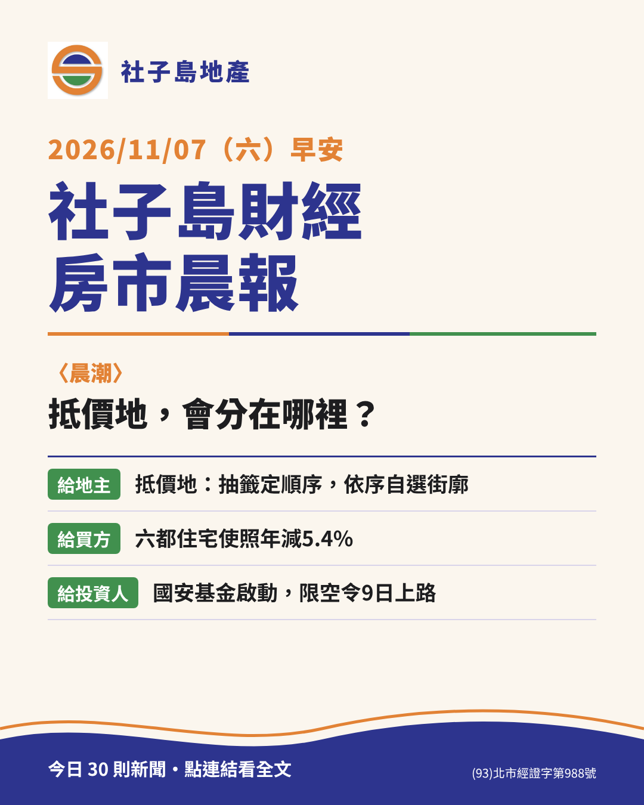

每天早上 7:35，社子島地產團隊為地主、買方與投資人整理：社子島與主商圈、台北房市、區段徵收與市地重劃、稅務與法律，附上我們的〈晨潮〉。

閱讀最新一期社子島地產團隊在延平北路九段，守在堤邊，陪地主、買方與投資人看懂每一塊土地。買賣、租賃、合建、區段徵收、市地重劃，歡迎來渡口坐坐。
(02)2810-8558｜consultantofland@gmail.com｜台北市士林區延平北路九段288號
本站由社子島地產開發有限公司經營，為民間不動產資訊網站，非臺北市政府官方網站；政府公告請以臺北市政府與地政局網站為準。